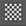
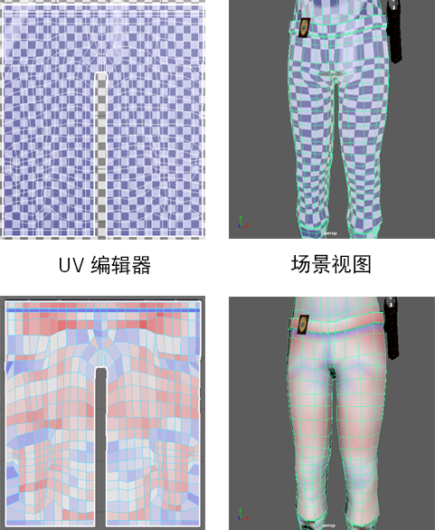

如果希望纹理正确地显示在网格的曲面上，确认 UV 是否正确定位是关键。确认 UV 放置的方法之一就是应用临时纹理贴图，然后可以使用该贴图对模型上可能的扭曲求值。为此专门创建了两个着色器：棋盘格和扭曲。
将临时贴图应用于 UV 壳
- 选择网格。
- 打开 UV 编辑器。
- 单击“棋盘格着色器”(Checker Shader) () 或“扭曲着色器”(Distortion Shader) (
 ) 按钮。
) 按钮。

棋盘格着色器允许通过查看彩色方块扭曲的位置，对扭曲区域进行求值。
扭曲着色器将特定颜色应用于拉伸或压缩 UV 壳的区域（分别为红色和蓝色）。为了避免扭曲，您将需要移动 UV，直到 UV 壳的大部分为白色。